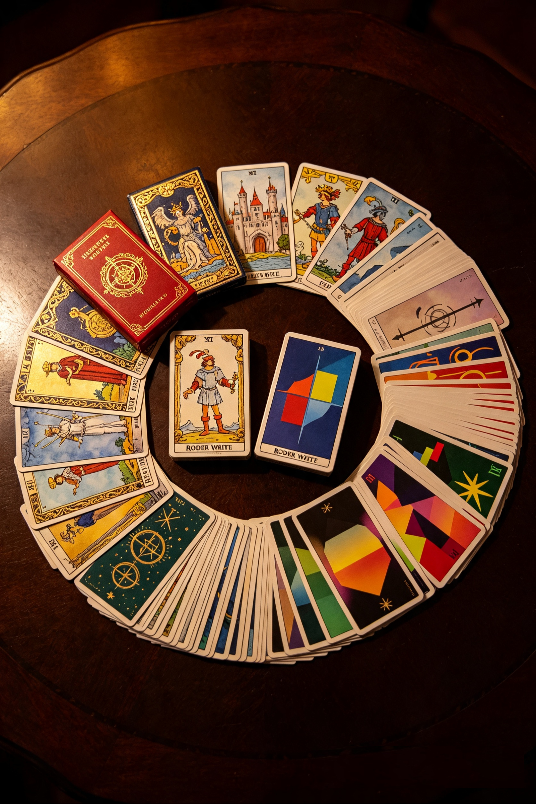

🎴 Types of Tarot Decks: Tradition to Modern Designs
Over six centuries, thousands of Tarot decks have been created — each one carrying the same symbolic foundation, yet shaped by the culture, vision and style of its creator. Whether hand‑drawn, painted or digitally designed, every deck offers a unique way to connect with the wisdom of the cards.

Traditional Decks
These are the decks that built the tradition. The most famous include the Tarot de Marseille — known for its bold lines and simple geometric symbols — and the Rider–Waite–Smith deck we use here, which added full narrative scenes to every card. Traditional decks preserve the original symbols, structures and meanings passed down through generations, making them ideal for learning and deep study.
Themed & Artistic Decks
These decks reimagine Tarot through specific themes or aesthetics: nature, mythology, fantasy, animals, seasons, music or spiritual paths. Examples include the Wild Unknown Tarot, Moonchild Tarot or Green Witch Tarot. They keep the core meanings but wrap them in imagery that speaks directly to your interests, personality or beliefs.
Cultural & Modern Decks
Cultural decks honor traditions from around the world — African, Indigenous, Asian, Latin American and many others — bringing new perspectives and symbols that reflect diverse wisdom. Modern decks often update imagery to be more inclusive, contemporary or minimalist, while staying true to the essence of Tarot.
There is no “correct” or “superior” deck. The best one is simply the one that resonates with you — the one that feels right in your hands and makes its message clear to your heart and intuition.